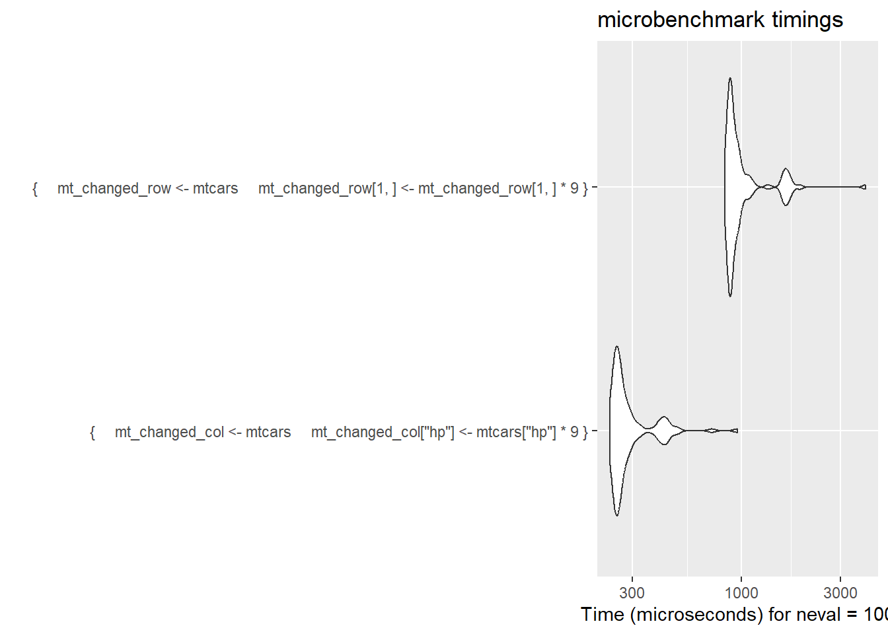

library(lobstr) # to help understand how objects are structured
library(dplyr)
library(microbenchmark)R reading group notes
This was about the names and values chapter in Advanced R (2nd ed). It’s mainly about understanding how objects are named in R, and what the implications are for ordinary R practitioners.
The first point is about names. We usually think about assignment as making an object called x. But it’s definitely better to think about these separately - first creating an object and then binding it to a name. That means that names have objects, rather than objects having names.
x <- c(1, 2, 3) # create an object
obj_addr(x) # location in memory[1] "0x55faf8154568"y <- x # bind an additional name to the object
obj_addr(x) == obj_addr(y) # it's just one object with two names[1] TRUEThis applies to objects in general, including function definitions:
obj_addr(mean)[1] "0x55faf2b25da0"steve <- mean
obj_addr(steve)[1] "0x55faf2b25da0"We only create a new object when we modify one of the names:
y[3] <- 9
obj_addr(x) == obj_addr(y) # different objects now[1] FALSEThere are a couple of important exceptions to this general principle. First, lists have an extra step, in that they refer to references, rather than to objects directly:
l1 <- list(1, 2, 3)
l2 <- l1
obj_addr(l1)[1] "0x55faf7e0bc38"obj_addr(l2)[1] "0x55faf7e0bc38"l2[[3]] <- 99
obj_addr(l1)[1] "0x55faf7e0bc38"obj_addr(l2)[1] "0x55faf7e04ae8"ref(l1, l2)█ [1:0x55faf7e0bc38] <list>
├─[2:0x55faf705de60] <dbl>
├─[3:0x55faf705dbc0] <dbl>
└─[4:0x55faf705da00] <dbl>
█ [5:0x55faf7e04ae8] <list>
├─[2:0x55faf705de60]
├─[3:0x55faf705dbc0]
└─[6:0x55faf707bb18] <dbl> As tibbles (and other tabular data structures in R) are effectively lists, this is an explaination as to why row-wise operations are so slow compared to operations on columns. As tibbles are are lists of columns, updating a column just makes a new reference. Changing a row, on the other hand, makes a whole new set of objects and references:
mt_changed_col <- mtcars
mt_changed_col$hp <- mtcars$hp*9
mt_changed_row <- mtcars
mt_changed_row[1,] <- mt_changed_row[1,] * 9
ref(mtcars, mt_changed_col, mt_changed_row)█ [1:0x55faf813d848] <df[,11]>
├─mpg = [2:0x55faf2baf250] <dbl>
├─cyl = [3:0x55faf2baf390] <dbl>
├─disp = [4:0x55faf45e0940] <dbl>
├─hp = [5:0x55faf45e0a80] <dbl>
├─drat = [6:0x55faf45e0bc0] <dbl>
├─wt = [7:0x55faf45e0d00] <dbl>
├─qsec = [8:0x55faf45e0e40] <dbl>
├─vs = [9:0x55faf7f0b060] <dbl>
├─am = [10:0x55faf7f0b1a0] <dbl>
├─gear = [11:0x55faf7f0b2e0] <dbl>
└─carb = [12:0x55faf7f0b420] <dbl>
█ [13:0x55faf813d378] <df[,11]>
├─mpg = [2:0x55faf2baf250]
├─cyl = [3:0x55faf2baf390]
├─disp = [4:0x55faf45e0940]
├─hp = [14:0x55faf7f0b940] <dbl>
├─drat = [6:0x55faf45e0bc0]
├─wt = [7:0x55faf45e0d00]
├─qsec = [8:0x55faf45e0e40]
├─vs = [9:0x55faf7f0b060]
├─am = [10:0x55faf7f0b1a0]
├─gear = [11:0x55faf7f0b2e0]
└─carb = [12:0x55faf7f0b420]
█ [15:0x55faf4289858] <df[,11]>
├─mpg = [16:0x55faf52ce240] <dbl>
├─cyl = [17:0x55faf3074c80] <dbl>
├─disp = [18:0x55faf4e19620] <dbl>
├─hp = [19:0x55faf3a61720] <dbl>
├─drat = [20:0x55faf44c58d0] <dbl>
├─wt = [21:0x55faf7e7cc20] <dbl>
├─qsec = [22:0x55faf521e3b0] <dbl>
├─vs = [23:0x55faf3260f30] <dbl>
├─am = [24:0x55faf5a5d9e0] <dbl>
├─gear = [25:0x55faf55a7410] <dbl>
└─carb = [26:0x55faf57b82b0] <dbl> col_row <- microbenchmark(
{mt_changed_col <- mtcars
mt_changed_col["hp"] <- mtcars["hp"]*9},
{mt_changed_row <- mtcars
mt_changed_row[1,] <- mt_changed_row[1,] * 9}
)
col_row |>
mutate(expr = case_when(stringr::str_detect(expr, "col") ~ "by col",
TRUE ~ "by row")) |>
group_by(expr) |>
summarise(`mean time (μs)` = mean(time)/1000) |>
knitr::kable() # about 4x faster to change the col than the row| expr | mean time (μs) |
|---|---|
| by col | 164.4104 |
| by row | 706.0133 |
ggplot2::autoplot(col_row)
We also looked briefly at alternative representation. The range operator is the best example of highly compact representations:
obj_size(1:1000000) # approx size?680 Bobj_size(1:2) == obj_size(1:1000000) # the range operator only stores the first and last values[1] TRUEobj_size(seq(1, 1000000)) # seq will use the same alternative representation...680 Bobj_size(seq(1, 1000000, 1.0)) # unless you ask it to make a sequence with non-1L steps 8.00 MBobject.size has lots of interesting implications for lists as it only describes the size of the references, rather than the underlying objects:
obj_size(rnorm(1e6)) # 8 mb8.00 MBmill <- obj_size(rnorm(1e6))
obj_size(list(rnorm(1e6), rnorm(1e6), rnorm(1e6)))#??24.00 MBobj_size(list(mill, mill, mill))#??368 Bobj_size(tibble(a = mill,
b = mill,
c = mill))1.21 kBAll strings are held in a common area of memory called the common string pool. This gives rise to a lot of interesting size consequence for vectors with shared strings:
s1 <- c("the", "cat", "sat", "mat")
s2 <- c("the", "the", "the", "the")
obj_size(s1)304 Bobj_size(s2)136 Bref(s1, character = TRUE)█ [1:0x55fafb4a3368] <chr>
├─[2:0x55faf3e1d130] <string: "the">
├─[3:0x55faf20fed78] <string: "cat">
├─[4:0x55fafb4a80e8] <string: "sat">
└─[5:0x55faf2f031c8] <string: "mat"> ref(s2, character = TRUE)█ [1:0x55fafb471cd8] <chr>
├─[2:0x55faf3e1d130] <string: "the">
├─[2:0x55faf3e1d130]
├─[2:0x55faf3e1d130]
└─[2:0x55faf3e1d130] obj_size(c(1,2,3,4)) # numeric vectors don't behave in the same way80 Bobj_size(c(4,4,4,4))80 B